산기슭
실력의 산
홈 화면이 곧 지도예요. 공부한 만큼 경험치가 쌓이고, 고래가 tier 1부터 60까지 한 칸씩 올라갑니다.
- 오늘 얼마나 올랐는지 한눈에
- 밤에는 고래도 야영하며 쉬어요
고래 기사와 함께 영어와 일본어 일상 회화를 익히는 앱이에요. tier 1 산기슭에서 tier 60 정상까지, 오늘 할 만큼만 말하고 한 걸음씩 올라가요.
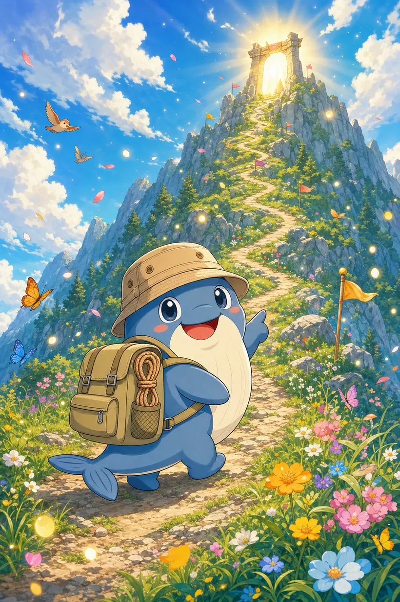
앱 안의 모든 기능은 산 위의 한 장소예요. 아래 화면은 전부 실제 기기에서 찍었습니다.
홈 화면이 곧 지도예요. 공부한 만큼 경험치가 쌓이고, 고래가 tier 1부터 60까지 한 칸씩 올라갑니다.
매일 새로 깔리는 짧은 길이에요. 단어, 숙어, 문법, 문장 말하기를 차례로 지나면 하루 공부가 끝납니다.
"brand new가 정확히 무슨 느낌이에요?" 같은 질문을 편하게 던지세요. 초등학교 선생님부터 원어민 친구까지, 말투가 다른 선생님을 골라 물어볼 수 있어요.
마을 사람들에게 목소리로 말을 걸어요. 병원에서 증상 말하기, 식당에서 주문하기, 공항에서 길 묻기처럼 진짜 있을 법한 상황에서 대화가 이어집니다.
뜻 맞추기, 받아쓰기, 빈칸 채우기, 가로세로 퍼즐까지 여러 방식으로 단어를 익혀요. 헷갈린 단어는 잊을 때쯤 다시 나오도록 간격을 두고 복습시켜 줍니다.
5 tier마다 길을 막는 보스가 있어요. 그동안 배운 단어로 문제를 맞힐 때마다 공격이 들어갑니다. 이기면 관문이 열리고, 고래는 새 갑옷을 입어요.
tier 5부터 60까지, 관문마다 다른 보스가 기다려요. 뒤로 갈수록 더 단단해집니다.
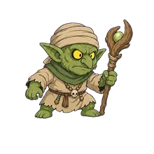
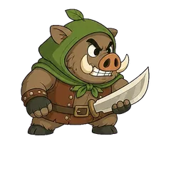
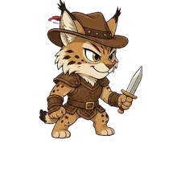
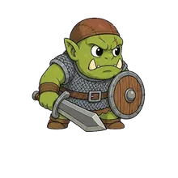
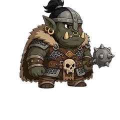
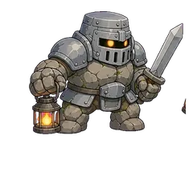
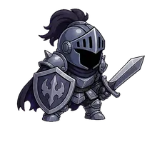
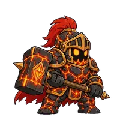
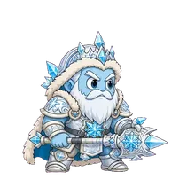
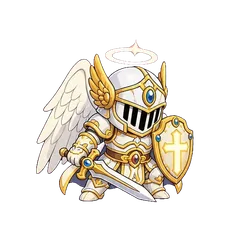
관문을 하나 넘을 때마다 옷이 바뀌어요. 산기슭의 누더기 차림이 정상에 가까워질수록 빛나기 시작합니다.
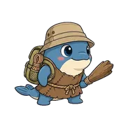
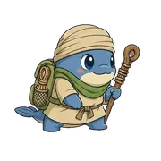
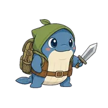
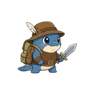
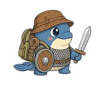
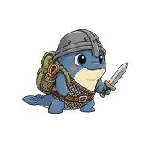
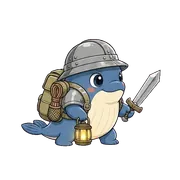
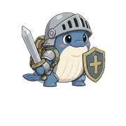
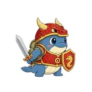
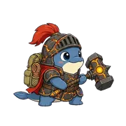
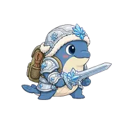
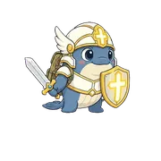
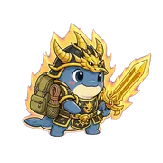
고래가 말풍선으로 하루 한 문장을 건네요. 먼저 말해 보고, 정답과 비교하고, 따라 말하면 끝.
저장한 단어와, 내가 직접 말해서 통과한 문장이 날짜순으로 모여요. 다시 듣고 다시 말해 볼 수 있어요.
오늘 있었던 일을 편하게 말하면, 더 자연스러운 표현으로 고쳐서 보여 줘요.
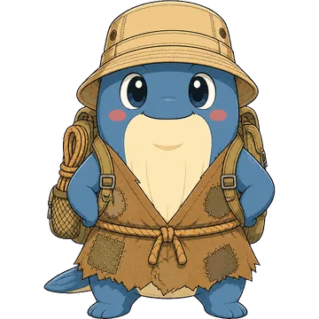
여행지에서 길을 묻고, 식당에서 주문하고, 처음 만난 사람과 몇 마디 나눌 수 있는 정도. 그 지점까지 가장 덜 지루한 길을 만드는 것이 이 앱의 목표입니다.
지금은 영어와 일본어를 배울 수 있어요.
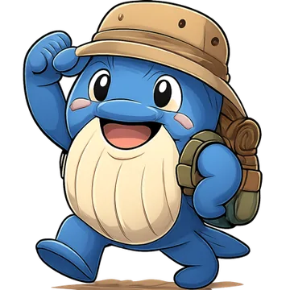
곧 Google Play에서 만날 수 있어요. 출시 소식은 이 페이지에 가장 먼저 올라옵니다.
Google Play 출시 예정